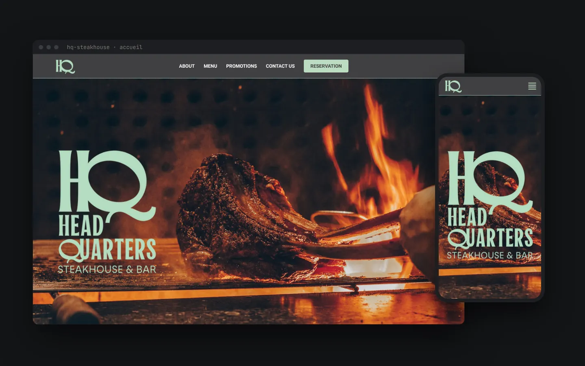

HQ Steakhouse & Bar
Le site d'un vrai restaurant du Cap, de l'analyse des besoins jusqu'à la mise en ligne : 11 pages responsive pour la carte, les promotions, la réservation et le contact.A website for a real restaurant in Cape Town, from requirements to launch: 11 responsive pages for the menu, specials, bookings and contact.

Vue d'ensembleOverview
HQ Steakhouse & Bar est un restaurant de Century City, au Cap. Le thème du projet était libre : j'ai choisi un client réel pour travailler à partir de vrais contenus (carte, horaires, adresse, identité visuelle) et simuler une mise en situation professionnelle complète.HQ Steakhouse & Bar is a restaurant in Century City, Cape Town. The brief left the topic open, so I picked a real client to work from real content (menu, opening hours, address, branding) and treat it like a professional job from start to finish.
ObjectifObjective
Concevoir un site vitrine clair qui présente la carte, met en avant les offres de la semaine et permet de réserver ou de contacter le restaurant facilement, sur ordinateur comme sur téléphone.Design a clear showcase site that presents the menu, highlights the weekly specials and makes it easy to book or get in touch, on desktop and on mobile.
DémarcheApproach
- Analyse des besoins du client et des cibles : clientèle locale et touristes.Client needs and target audience: local diners and tourists.
- Architecture du site : Accueil, About, Menu (6 catégories), Promotions, Contact, Réservation.Site map: Home, About, Menu (6 categories), Specials, Contact, Bookings.
- Charte graphique reprise de l'identité du restaurant : vert #BCDCC2, anthracite #414042, Playfair Display et Roboto.Visual identity taken from the restaurant's branding: green #BCDCC2, charcoal #414042, Playfair Display and Roboto.
- Réalisation en HTML/CSS avec une feuille de style commune et des variables CSS.Built in HTML/CSS with one shared stylesheet and CSS variables.
FonctionnalitésFeatures
- 11 pages HTML et une feuille de style commune11 HTML pages and one shared stylesheet
- Carte avec sous-navigation par catégorie et cartes PDF à téléchargerMenu with sub-navigation by category and downloadable PDF menus
- Menu burger en pur CSS, sans JavaScriptPure CSS burger menu, no JavaScript
- Mises en page en CSS Grid et Flexbox qui passent sur une colonne sur mobileCSS Grid and Flexbox layouts that collapse to one column on mobile
- Carte Google Maps intégrée et liens vers les réseaux sociauxEmbedded Google Map and social media links
Ma contributionMy contribution
Analyse des besoins, architecture du site, charte graphique, intégration HTML/CSS.Requirements, site structure, visual identity, HTML/CSS build.
TechnologiesTechnologies
Ce que j'ai apprisWhat I learned
Un menu mobile sans JavaScriptA mobile menu without JavaScript
Le projet portait sur HTML et CSS uniquement. Le menu burger repose sur une case à cocher cachée et le sélecteur :checked.The brief was HTML and CSS only. The burger menu uses a hidden checkbox and the :checked selector.
Une carte longue et lisibleA long menu that stays readable
La carte du restaurant est découpée en 6 catégories avec une sous-navigation, et chaque carte existe aussi en PDF.The menu is split into 6 categories with a sub-navigation, and each one is also available as a PDF.